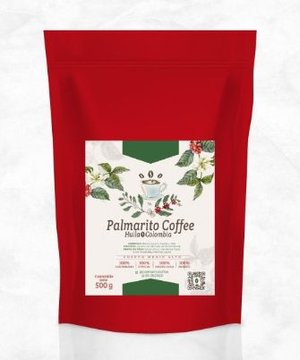

SD2025/0089837
MARCAMARCA – PALMARITO COFFEE
EN PALMARITO COFFEE, SOMOS PRODUCTORES DE CAFÉ ESPECIAL EN EL SUR DEL HUILA, COLOMBIA. NUESTRO TRABAJO ES UN HOMENAJE AL LEGADO DE DON JOSÉ DOLORES REYES CARO, UN AGRICULTOR VISIONARIO QUE DEDICÓ SU VIDA AL DESARROLLO DE LA CAFICULTURA Y AL BIENESTAR DE SU COMUNIDAD. SIGUIENDO SU EJEMPLO, CULTIVAMOS CON PASIÓN Y COMPROMISO, APOSTANDO POR LA EXCELENCIA EN CADA ETAPA DE PRODUCCIÓN.
- Inventor
- Adriana Roa Carvajal
- Sector
- Agroindustria
- Página web
- Abrir enlace ↗
- Contacto
- 📞 3132621825